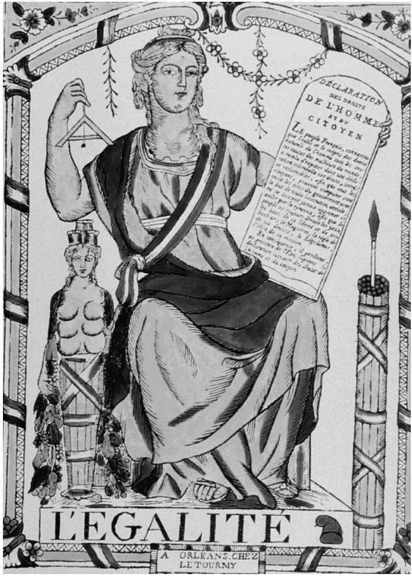

自由主义是欧洲第二个影响世界的伟大思想，其主要特点是把个人从阶级、社团或政府的约束中解放出来。它的兴起与中产阶级的崛起有着密切关系。不过，在中欧和东欧，由于那里的中产阶级很软弱，自由主义为一些开明的贵族所采纳。还有，自由主义是以其古典形式在西欧发展起来的，就其信条和支持者来说，实质上仍是一种中产阶级的运动。
自由主义的学说在英国革命期间首次被明确地提出来并得到贯彻。当时，这些学说的主要内容是反对王室任意干涉宗教信仰自由、人身安全和财产安全。准确地说，贯彻这些学说包括议会对统治权的控制、独立政党的存在，以及对反对党的必要性及其权利的承认。另一方面，由于公民权受到财产条件的限制，构成人口绝大部分的中下层阶级和劳动者无投票权。因而，17世纪英国的自由主义增进了中产阶级的利益。
自由主义随着美国革命而得到进一步的解释和应用；美国革命期间，在限制奴隶制、扩展宗教信仰自由、扩大公民权和确立立宪政体方面取得了很大进展。1791年所采用的联邦宪法是以分权原则为基础，也就是让行政权、立法权和司法权互相牵制和平衡，目的在于制止暴政。《人权法案》保证了宗教信仰自由、言论自由、出版自由和集会自由。因此，美国宪法同英国的解决办法一样，都是通过限制公民权、通过规定对总统和参议员的间接选举和对不同时期政府各部门的选举，仔细地保护有产阶级的利益。这些安排的目的是要使一个激进的民众运动在任何时候都无法获得对整个政府的控制，都不会引起危险的变革。
在自由主义信条方面，比美国革命更进步的是法国革命。它的《人权和公民权宣言》是18世纪自由主义的典范陈述，因为它以响亮的词语宣布了个人自由权。但是，法国自由主义主要也是一种资产阶级运动。《宣言》同法国革命者所采纳的所有宪法一样，强调财产权“神圣不可侵犯”。因此，拿破仑那部已被证明是最持久、最有影响的著名法典，明确禁止组织工会和进行罢工。
我们可以得出结论说，从英国革命、美国革命和法国革命中出现的自由主义采取了立宪议会政体的制度形式，关心平等的公民权利，不过，并不关心平等的政治权利和社会权利。随着19世纪的逝去，自由主义同其他历史运动一样，在性质上起了明显的变化。在群众通过接受愈来愈多的教育和参加工会组织而变得更加自信的同时，自由主义不可能再继续主要关心资产阶级的利益。因而，早期的古典自由主义转为一种更加民主的自由主义。投票箱前的平等补充了法律面前的平等。到19世纪末叶，成年男子的选举权已在西欧大部分国家起作用。甚至备受推崇的自由放任主义原则也逐步得到修改。以往，政府对经济问题和社会问题的干预一向被认为干涉了自然法则的作用，是有害的、无效的。不过，就劳动者而论，这一理论上的主张与基本事实并不相符。公民自由权和选举权不能使劳动者免受由失业、疾病、伤残和老龄所引起的贫困和不安全，因而，他们利用选举权和工会组织迫切要求实行社会改革。在这种压力下，一种新的、民主的自由主义发展起来，它承认国家对全体公民的福利所负的责任。因此，西欧各国由德国带头，纷纷采纳了种种社会改革方案，其中包括老年养老金，最低工资法，疾病、事故和失业保险，以及有关工作时间和工作条件的法规。民主的自由主义的这些改革是已成为我们当今时代标志的福利国家的前奏。

图199 公民平等是革命时期的一个主要标记。这个平等女神像手里拿着一本《人权和公民权宣言》。